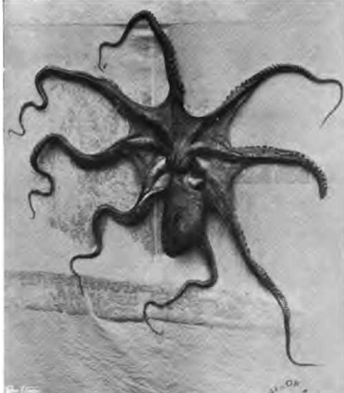
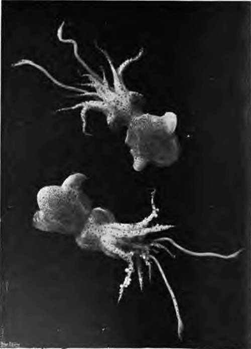
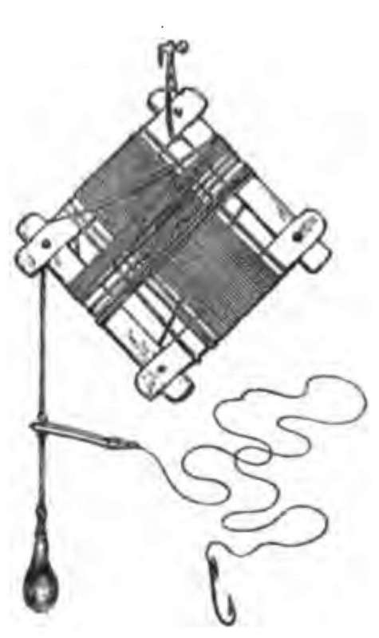
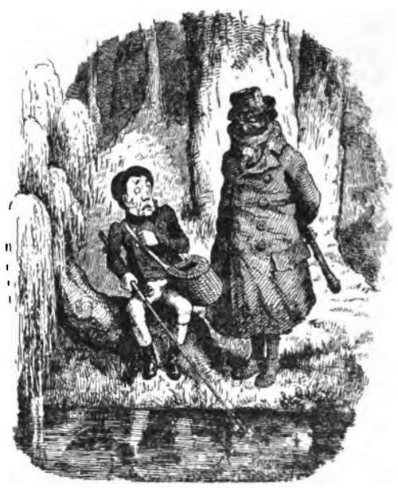

Chapter XXXV. Some Notes On Baits
Description
This section is from the book "Fishing", by Horace G. Hutchinson. Also available from Amazon: Fishing.
Chapter XXXV. Some Notes On Baits
It seems desirable that a few notes should here be given on one or two of the more uncommon natural baits, of which the sea-angler from time to time avails himself. Every form of fishing has its own peculiar natural baits, from the bluebottle or daddy-long-legs of the surreptitious trout fisherman, to the " hellgramite" stone cat-fish, and young frog of the American expert at black bass; and the sea fisherman on our coasts has as extensive a choice as most of his craft. There are all manner of fish and parts of fish, such as the tail of the eel or the liver of the ray. Few of our sea-fish are quite unimportant as bait; but the amateur may be emphatically warned not to use any of the flat-fish (save occasionally a very small living dab for bass), or gurnard, or dory, or cod, or whiting, or conger. It is with the more oily and more silvery fish that he will have most success, and such fishes as the herring, pilchard, sprat, mackerel, and sand-eel, combine these qualities which appeal alike to the fish that hunt their food by scent and those which rely on their sight to guide them to their prey. Then, after the fishes, there are many invertebrate marine animals which make excellent baits. Among crustaceans there are the prawn, the shrimp, the hermit-crab, and the soft shore-crab. The molluscs furnish mussels, limpets, oysters, razor-fish, squid, and cuttle. The annelids are represented by the lugworm, the ragworm, and the rockworm, a nereid with pincers, also found in the shells of hermit-crabs, or crawling among the bunches of mussels that cluster beneath many of our south-coast piers. This nereid worm is a most interesting creature. With its small black nippers it is able to inflict a sharp, though not in any way painful or dangerous, pinch on the finger, and the retractile action of this organ may be tested by holding the loop of a gut line within reach, when it will promptly be drawn into the ever-active mouth. It always used to be a tradition, when I fished a good deal at Dover ten or eleven years ago, that these rockworms-so called in that locality because they are chiefly procured from the rocks at the foot of the lately menaced Shakespeare Cliff -were extremely delicate, that they would only bear the ordeal of travel with considerable risk, and that they were most difficult to keep. Sunlight and fresh water were regarded as particularly damaging. Such are the notions which easily gain acceptance, and until quite recently I implicitly subscribed to the current opinions regarding the rockworm's fragile constitution. It happened, however, that I had occasion last autumn to procure a consignment of rockworms from my old friend and angling comrade, Surgeon-General Paske, of Dover, to fish for pollack with off a Devon pier. By a succession of untoward circumstances, such as the worms arriving late on Saturday, and having in consequence to be kept until the Monday, as well as by their having been forgotten for two hours in the full sun of a September afternoon and left out a whole night in a pouring rain, these unhappy worms were in turn subjected to every indignity calculated to make them leave this life. As a matter of fact, however, they were perfectly fit and lively on the Monday evening, and a few of them even survived for use on the Tuesday. Thus they showed themselves indifferent to a journey of some hundreds of miles in a perforated box sent by parcel post, as well as to all the other inconveniences here detailed. They may be hooked just through the head, and pollack of any size will dash at them and swallow them whole. The rag worm is a less fascinating annelid, commonly dug from the ooze of estuaries and harbours. It is chiefly used as a bait for smaller pollack, as also for smelts or shoals of young bass, while for the grey mullet it is usually regarded as second to none. The lugworm, coarsest and most repellent of all, is dug deep in the sand near low-water mark, and it is accepted by all manner of sea-fish, from large bass down to small flat-fish. All of these worms are best kept in shallow wooden boxes, such as would hold fifty cigars (though the smell of the tobacco must be thoroughly got rid of), under a covering of green seaweed. This weed should be kept damp with sea-water, but this must be drained off after each wetting, as an accumulation of water in the box seems to injure the worms. It is also desirable that dead or injured individuals should be from time to time removed. The ragworms are undoubtedly cannibals, and I think the same holds good of the rockworms, but I never caught lugworms in the act of destroying one another. Indeed, their manner of feeding is different, and they are less carnivorous than the others.
97.- Octopus.
98. - Squid.
The chief baits among the molluscs are the mussel and the squid. The mussel is familiar to every one who has visited the seaside, though if there are neither rocks nor a pier of some kind in the locality it may be necessary to wait until a gale throws up bunches of these useful shellfish on the beach. Some of our piers, like that at Bournemouth, furnish incredible supplies of mussels, and for the last twenty years the stock seems to have been inexhaustible, though protected by no local bye-law, as at Southend and at some other resorts. There is a right way of opening a mussel, and there are half-a-dozen wrong ways, almost any one of which is liable to result in a badly cut finger. The right way may be learnt from a fisherman in a few moments, and it would be waste of space to attempt any detailed instructions in this place.
The squid, which is not unlike an octopus, except that it has fewer arms, or tentacles, must be procured from the trawlers, or else caught by the amateur for his own use. This repulsive animal is endowed with an irrepressible curiosity, often fatal to itself, as a result of which it may be caught at sunset on a piece of white china armed with several hooks which have had the barbs filed off. The barbs would never penetrate the tough flesh of this mollusc, and even without them the points must be kept very sharp. This bait is worked in a series of jerks among the rock pools from a boat, and the squid, which seizes it with a backward dart, must be got as soon as possible to the landing-net, and carefully held beneath the surface until it has discharged the abominable cargo of ink-like fluid, with which it blinds its pursuers or victims, as circumstances may demand. It is then killed by a blow or two from a stick, cut open, washed, and cleaned. It is the first of all baits for conger fishing, and there are times when it takes some beating for dabs, whiting, or even bass.
The soft shore-crab, which has to be sought in summer under stones, where it hides away from its powerful foes in abject fear until its new armour is grown, is a first-rate bait in some places for bass and flounders, and may also be used for cod and whiting. It is usually put on the hook minus its limbs, and it is more merciful to tread on it first, thus at once killing it and making it more palatable as bait.
Edible crabs are, while in this transitional state, which goes by a variety of names, protected by the different Sea Fisheries Districts, but the angler may take the small soft green crabs of our foreshores with a clear conscience, as these are commercially valueless.
The hermit-crab is not used in many localities, but I have at times found it excellent on leger-tackle for flat-fish. In its shell, by the way, there often dwells the nereid worm above alluded to, and the shells of any hermit-crabs (stolen or borrowed, by the way, from whelks) should always be very carefully cracked and the spiral, convoluted end examined in case one of these invaluable worms should be tucked away in it. And it is surprising in how small a space these worms are able to secrete themselves.
The prawn and shrimp are usually put on the hook alive, the point being passed just through the first joint above the tail, so as to interfere as little as possible with the creature's natural movements in the water. They are taken chiefly by pollack, and at Selsey and one or two other places pollack fishers use nothing else.
The manner of taking, keeping, and using the sand-eel has already been given in sufficient detail, and it is here only necessary to add that it is, when living, the very finest all-round bait in the sea. If I had to name two others for a place, I would choose the mussel and lugworm, but I would rather any day go afloat for really large fish with half-a-score of lively sand-eels than with a bucket of mussels or a hundred worms.
Herring, pilchard, and mackerel are used almost similarly, the one peculiar bait being the small piece from the side of the mackerel's tail, used in mackerel fishing, and already described under its local names of " float," "last," or " snade." Otherwise, the two sides are removed as neatly as possible from the backbone, the head and tail being also cut clean off. Then pieces, varying from half an inch to an inch wide, according to the size of the hooks that have to be baited, are cut diagonally from each side. The object of this diagonal cutting is to give a longer strip than would be possible if the side of the fish were cut straight across, and also, in the case of the mackerel, to have the skin on the bait as variegated and consequently as conspicuous as possible in the water.
The majority of sea-fish like the bait to be quite free of taint. The bass is about the only fish with which I am acquainted that does not show itself fastidious over a bait that is a little repulsive to the human nose-indeed it may even be said to prefer it in that condition. It is generally held that the red mullet, most delicious of sea-fish, likewise takes its meals "high," but as one does not as a rule angle specially for this fish, the knowledge is not of much practical use. For conger, however, the squid must be absolutely sweet; for pollack or bream the pilchard must be free of decay; for flat-fish and whiting the worms should be living and the mussels newly opened.

Continue to: